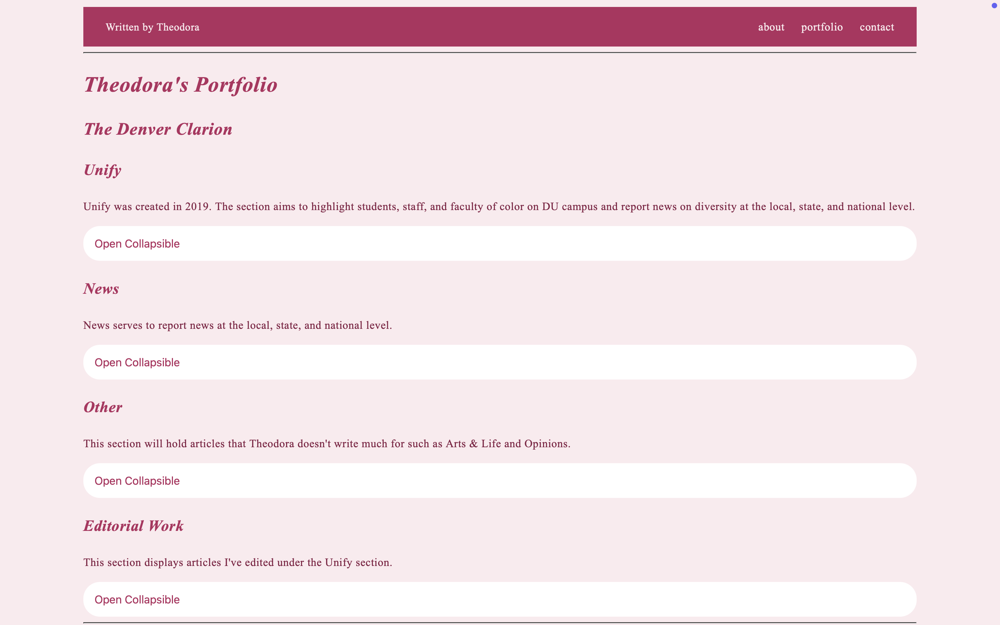
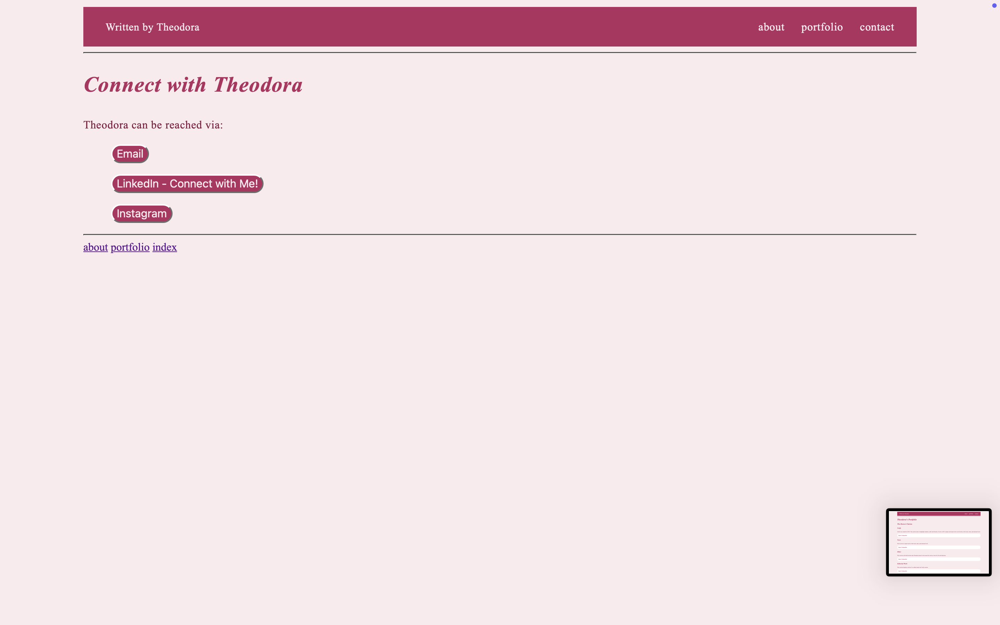
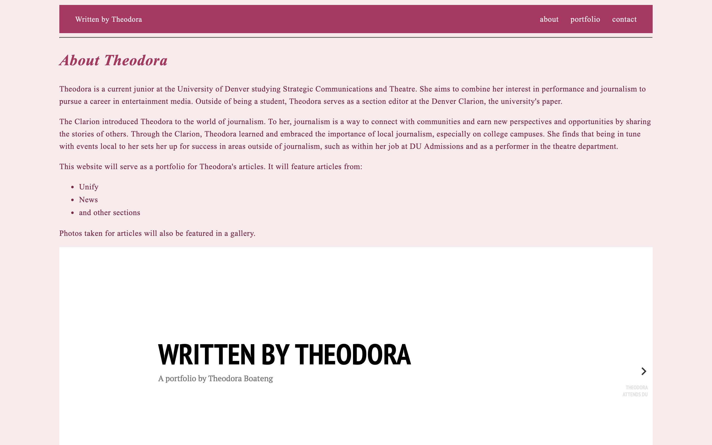
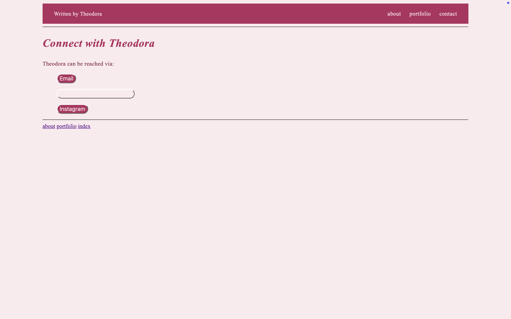
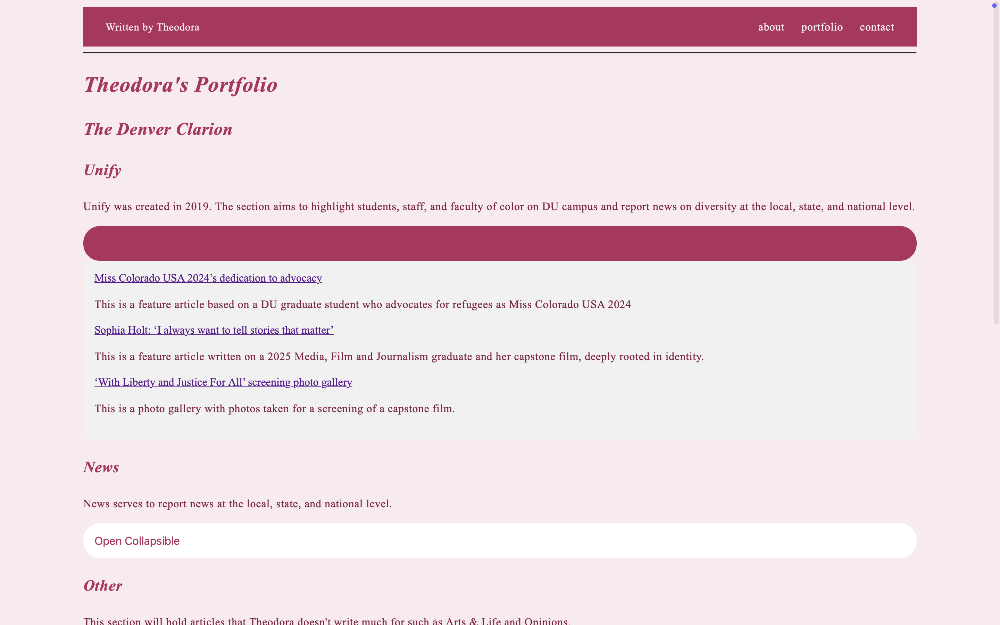
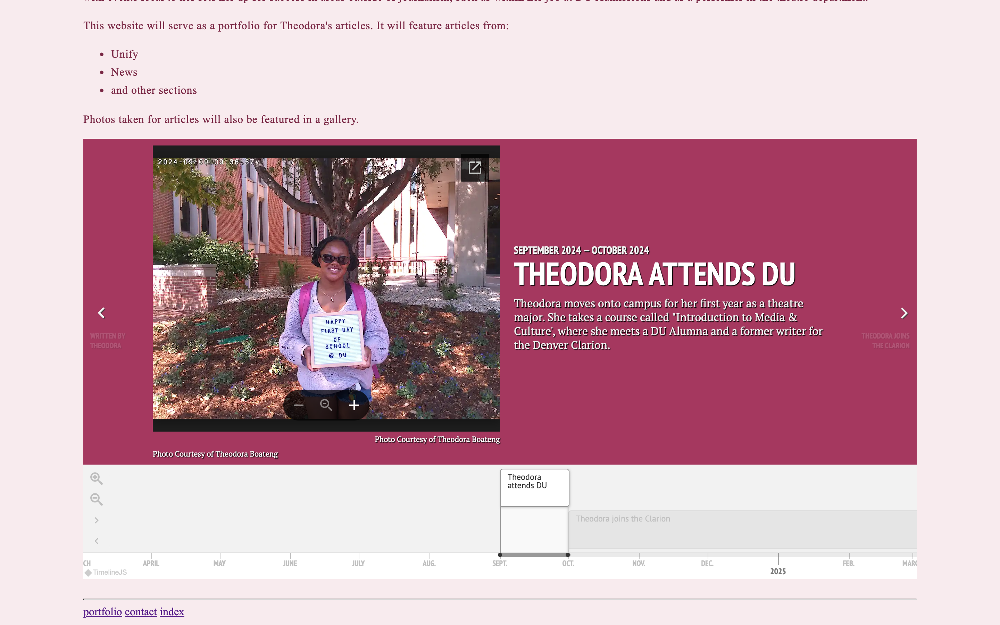

This website was created to serve as a portfolio for my journalism work. I aim to either pursue journalism or public relations as a career path, and want my articles to speak for my communication skills, through my articles, and my multimedia skills through my photo gallery. The page is designed to lead readers to the portfolio and later the contact page to further follow up with me about materials on my page.







TextEdit, GitHub, Figma
The biggest thing that set me up for success was patience, time, and allowing myself to fail. Failing allowed me to practice trial and error, review my work, and look into our readings and online tutorials, leading to a better understanding of how to work with HTML, CSS, and JavaScript. There were times when I absolutely wanted to give up, but now I have a website showcasing everything I’ve learned in ten weeks.